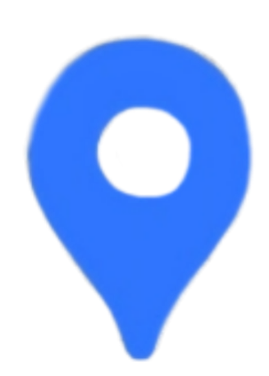

JENFIEL TOMARONG
2023-2024 BSIT-3A
A student, currently pursuing Bachelor of Science in Information Technology at Cordova Public College.
CONTACTS
09215876042
 j.jejune18@gmail.com
j.jejune18@gmail.com
 Suba-Masulog Basak Lapu-lapu City, Cebu
FAVORITE MAJOR SUBJECTS
- First year: Basic Electronics
- Second year: Digital Logic Design
- Third year: Application Development